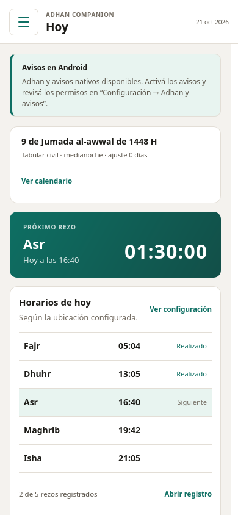
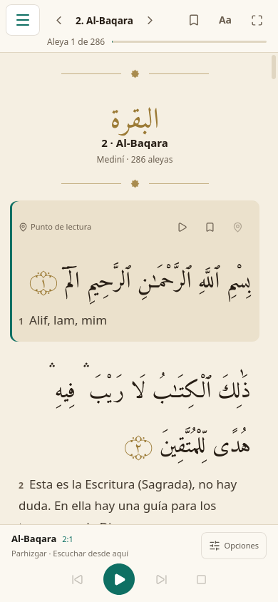
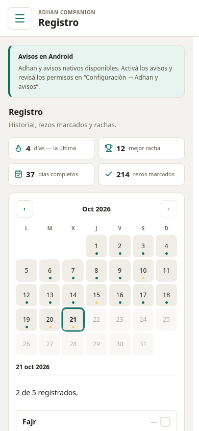

Tu compañero diario de rezo,
100% local y sin distracciones
Horarios exactos de oración calculados en tu propio dispositivo con PrayTimes C, adhan configurable, lector y recitación del Qur’an offline y sincronización privada en Google Drive.



Diseñado con respeto, privacidad y precisión ritual
Construido para acompañarte en tu práctica diaria sin invadir tu atención ni depender de la nube para funcionar.
Cálculo 100% Local
Los horarios se calculan en tu máquina mediante FFI al motor PrayTimes C (el mismo del firmware del reloj físico). No toca internet ni se cae si no hay red.
Tray-First en la Computadora
Vive en la barra de menú o bandeja de GNOME, KDE y Windows. Muestra el tiempo restante al próximo rezo con una simple mirada y notifica con preaviso.
Adhan y Tonos por Rezo
Cada oración tiene una asignación de la colección Doha (Dominio Público) o tonos discretos. Podés pausar avisos en viajes o habilitar recordatorios amables.
Lector y Recitación del Qur'an
Texto árabe Uthmani de Tanzil y traducción de Raúl González Bórnez. Descarga suras para escuchar offline la voz de Shahriar Parhizgar con seguimiento sincronizado.
Registro y Acompañamiento
Marcá tus rezos completados en el día. Historial local mensual en formato append-only (registro.jsonl) con contador de rachas y días cumplidos.
Sincronización Privada
Sincronizá tus rezos, lectura y configuración entre computadoras y celulares conectando tu cuenta de Google Drive, usando solo el espacio privado de la app.
Descargá Adhan Companion para tu equipo
Disponible en paquetes oficiales verificados con SHA-256 para Linux, Windows y Android.
Linux
Ubuntu, Debian, Fedora, ArchInstalación nativa con icono de bandeja (tray), autostart, notificaciones del sistema e integración con el escritorio.
Windows
Windows 10 y Windows 11 (64-bit)Instalador NSIS liviano por usuario. Se integra en la bandeja del sistema junto al reloj y cuenta con auto-actualizador integrado.
Android
Android 7.0 en adelante (64 y 32-bit)Alarmas exactas nativas con AlarmManager, recitación del Qur’an en segundo plano con controles de audio en la barra de notificaciones.
sudo apt install "./Adhan.Companion_0.1.21_amd64.deb"